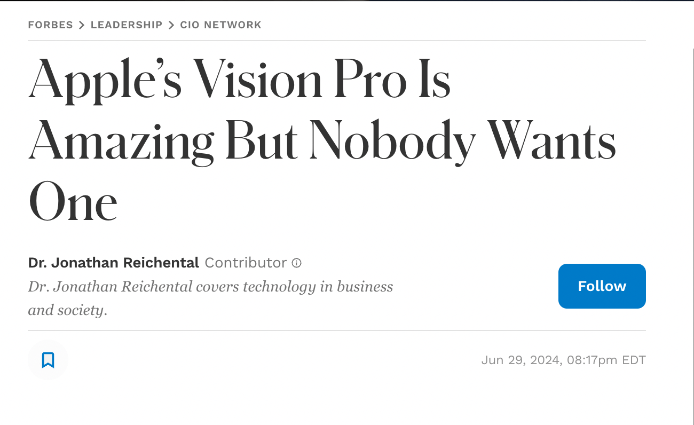

The AR Takeover: Is the Web Browser Era Ending?
@avindrafernando
Who Am I?
@avindrafernando

@avindra1

avindrafernando

taprobaneconsulting.tech
July 6th
2016
Is AR VR?
AR enhances reality;
VR replaces it
So, where did it all start?
Let's go back to the 90s.
Thomas Caudell
David Mizell

Source - Apple
Before AR
Source - HackerNoon
Web Sites ➡️ Web Applications
Biggest Limition

Where is AR taking us?
Source - XRAI
So,
what
could happen?
AR replacing Web Browsers
Act 1, Scene 1
Challenges?
AR co existing with Web Browsers
Act 2, Scene 1
AR and Web Development
What's
this
XR?

Apple Vision Pro
Meta Quest
Microsoft Hololens
Apple Vision Pro 🖥️ 🖥️ 🖥️ 🖥️ 🖥️
Spatial Computing

,Yet
Metaverse

Meta Quest
Ethical concerns in the Metaverse ???
Hololens
Enterprise vs. Commercial?
AR and Web Browser
Co-existence likely
Meta $10b
Apple Unknown
Microsoft $20b
Google $30b
Qualcomm $7b
Stay Hungry. Stay Foolish.
— Steve Jobs